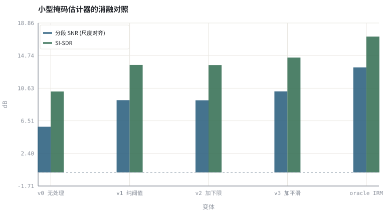
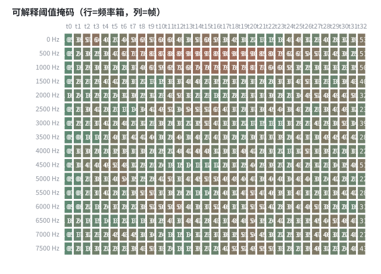

第 31 章结课项目：小型掩码估计器与全链路验证
把全书收束成一个可交付项目：合成数据、可解释掩码、消融矩阵、验收清单与复现脚本。
本章位置：承接 第 30 章 · 泛化、鲁棒性与评测陷阱 的评测协议，收束 第 19 章 · 时频掩码：IBM / IRM / CRM 与监督学习形式化 的时频掩码、第 26 章 · 联合 3A：多任务、级联与端到端建模 的联合 3A、第 28 章 · 延迟预算与 RTF：实时链路账本 的延迟预算；附录 A 提供公式、术语、命令与复现约定的总表。
结课项目是一个带 CI 的小服务：stft → 掩码 → istft 是处理管线，五个变体是 feature flag 的逐级打开，oracle 是 mock 掉依赖后的理想返回值，验收清单就是合并请求模板。先让流水线可复现，再谈模型多大。
- 能写出结课项目的输入、输出、因果约束与不可变口径。
- 能实现一个零第三方依赖的 STFT 阈值掩码估计器并跑通消融矩阵。
- 能计算理想比率掩码 oracle 上界，说明它与可解释模型的差距来源。
- 能按验收清单报告数据、指标、消融、复现命令与失败样本。
§知识点地图
每个知识点都配了 1～2 个扩展学习链接；本章完整资源清单见 扩展学习。
| # | 知识点 | 扩展学习 | 状态 |
|---|---|---|---|
| 1 | 结课项目规格 | SpeechBrain ↗ · Microsoft DNS Challenge ↗ | 正文已覆盖 |
| 2 | 合成数据配方 | Microsoft DNS Challenge ↗ · LibriSpeech ↗ | 正文已覆盖 |
| 3 | STFT 与 WOLA | Short-time Fourier transform ↗ · librosa ↗ | 正文已覆盖 |
| 4 | 理想比率掩码 IRM | Ideal ratio mask / T-F masking ↗ · Microsoft DNS Challenge ↗ | 正文已覆盖 |
| 5 | 可解释阈值掩码 | Ideal ratio mask / T-F masking ↗ · Microsoft DNS Challenge ↗ | 正文已覆盖 |
| 6 | 消融矩阵 | SpeechBrain ↗ · Microsoft DNS Challenge ↗ | 正文已覆盖 |
| 7 | 因果与延迟约束 | RFC 3550 RTP ↗ · MDN Web Audio API ↗ | 正文已覆盖 |
| 8 | 验收清单与复现 | SpeechBrain ↗ · Microsoft DNS Challenge ↗ | 正文已覆盖 |
§31.1项目规格：一条可交付的 3A 链路
目标不是刷新分数，而是交付一份别人能重跑、能改、能判对错的工程。输入是麦克风信号 y[n]，输出是增强后的 ŝ[n]；中间只允许一个逐时频单元的增益 G[t,k]，这样整条链路仍可放进 第 28 章 · 延迟预算与 RTF：实时链路账本 的延迟预算里。
ŝ = ISTFT( G ⊙ STFT(y) ) ，G ∈ [0,1]^{T×F} ，G[t,·] 只依赖第 t 帧及之前的帧
| 项 | 规格 | 不可变约束 |
|---|---|---|
| 采样率 / 位深 | 16 kHz / 16-bit 单声道 PCM | 全书统一，write_wav() 写出 |
| 帧 / 窗 | N=256 或 512，hop=N/2，Hann | 修改频谱后必须 WOLA 归一化 |
| 模型 | 可解释阈值掩码（本实验）+ 可选神经掩码 | 零第三方依赖版必须只含标准库 |
| 因果性 | 不使用未来帧，不依赖整段统计 | 见 第 27 章 · 因果性与流式推理：状态缓存、感受野 的流式状态缓存 |
| 产物 | fig/*.svg、audio/*.wav、终端数值 | 由脚本一次性生成，不手工改图 |
本实验的全部语音与噪声均为 tools/dsp.py 合成信号，不是真实录音，也不是任何产品的性能数据；结论只用于说明机制与量级。
§31.2数据：合成配方与三组划分
用 synthetic_speech() 生成具备谐波结构、音节包络与少量清音的类语音，叠加 white_noise()、低频音调与房间冲激响应；每条样本带唯一的录音 ID，按 ID 分组切分，避免 第 30 章 · 泛化、鲁棒性与评测陷阱 说的同源泄漏。
| 集合 | 用途 | 配方 | 可否调参 |
|---|---|---|---|
| D_train | 估计噪声谱先验、拟合阈值 | 干净语音 + 白噪声 / 色调噪声 | 可以 |
| D_val | 选阈值、下限、平滑系数 | 与训练同分布，独立样本 | 可以 |
| D_test | 报告最终指标 | 同分布 + OOD 两个子集 | 不可以 |
| D_blind | 结项一次前向 | 固定种子、全程不可见 | 不可以 |
y[n] = s[n] + v[n] ，v 可由 white_noise / tone / chirp / rir 组合；分组键 = 录音 ID
§31.3指标、消融与验收清单
指标必须成组报告：尺度对齐后的分段 SNR、尺度不变的 SI-SDR、响度近似 LUFS，再补一个无参考分数（DNSMOS 或主观听测）。消融每次只改一个变量，记录它在 D_val 与 D_test 上的收益差。
| 编号 | 变体 | 改了什么 | 要回答的问题 |
|---|---|---|---|
| v0 | 无处理 | 基线 | 退化有多严重 |
| v1 | 纯阈值 | 只加 1 − θ·N̂/|Y| | 阈值本身贡献多少 |
| v2 | 加增益下限 | 再加 FLOOR | 音乐噪声是否被压住 |
| v3 | 加帧间平滑 | 再加一阶递归 | 增益抖动是否下降 |
| oracle | 理想 IRM | 用真实 |S|、|N| 构造 | 可解释模型的上界在哪 |
- 交付
code/*.py一份，参数集中在参数区，固定random.seed(7)与rng = random.Random(7)。 - 报告每个变体的 segSNR、SI-SDR、LUFS 三列数值，并注明是否做尺度对齐。
- 报告 oracle 与 v3 的差值，说明差距来自噪声谱估计误差还是掩码函数形式。
- 报告因果性检查：逐帧处理时是否存在未来帧依赖；给出单帧算法延迟估计。
- 报告复现命令、产物清单（SVG / WAV 文件名与数量）与至少两个失败样本。
- 附上 第 30 章 · 泛化、鲁棒性与评测陷阱 的划分与泄漏自查表，确认没有用测试集选任何参数。
规格里不填任何「达到 X dB」的目标值；所有分数由脚本在读者本机打印，报告只记录实测值与口径。替换成真实语料或 PyTorch 模型后，同一份验收清单原样复用。
§31.4从标准库原型到 PyTorch 工程
- 把
masked()换成可训练掩码网络：PyTorch ↗ 负责张量与自动微分，torchaudio ↗ 负责 STFT/ISTFT 与流式推理。 - 训练框架与损失函数配方：SpeechBrain ↗、Asteroid ↗（含 SI-SNR 损失），数据用 DNS-Challenge ↗。
- 一体化增强/分离框架：ClearerVoice-Studio ↗；部署对照 ONNX Runtime ↗ 与 第 29 章 · 量化、剪枝与端侧推理 的量化。
- 离线链路核对用 ffmpeg 的 afftdn / arnndn / loudnorm；是否可用以本机
ffmpeg -filters与官方 Filters 文档为准。
信号模型、因果约束、指标口径、数据划分、验收清单。换掉的只是 G 从手写阈值变成网络输出——这正是全书从 第 00 章 · 3A 是什么：一条实时语音链路上的三个约束 到 第 30 章 · 泛化、鲁棒性与评测陷阱 一直保持的骨架。
§Python 实验
实验 31-1 · 理想掩码 oracle 与小型阈值掩码的消融对照
#!/usr/bin/env python3
# -*- coding: utf-8 -*-
"""用纯标准库构造 IRM 上界与四个可解释变体，打印指标三列、画出消融图与掩码热力图。
全部语音 / 噪声 / 房间冲激响应均为代码合成信号，仅用于教学演示机制与量级。
"""
from __future__ import annotations
import math
import pathlib
import random
import statistics
import sys
import time
_here = pathlib.Path(__file__).resolve()
for _p in _here.parents:
if (_p / "tools" / "dsp.py").exists():
sys.path.insert(0, str(_p / "tools"))
break
from dsp import (SAMPLE_RATE, fft, hann, stft, istft, magnitude_db, spectrum,
white_noise, tone, chirp, synthetic_speech, rir, convolve,
fft_convolve, delay, clip, normalize_peak, rms, rolling_rms,
smooth, db, energy_db, snr_db, erle_db, seg_snr_db,
scale_align, si_sdr_db, lufs_approx,
write_wav, read_wav, wav_info)
from chart import Chart, heatmap, BLUE, RED, GREEN, AMBER
FIG = _here.parents[1] / "fig"
AUDIO = _here.parents[1] / "audio"
FIG.mkdir(exist_ok=True)
AUDIO.mkdir(exist_ok=True)
random.seed(7)
# ---- 参数区 ----
N = 4096 # 0.256 s @ 16 kHz
N_FFT, HOP = 256, 128
NOISE_AMP = 0.040
THETA = 0.65 # 阈值掩码的过减系数
FLOOR = 0.12 # 消融项 B：增益下限
SMOOTH_A = 0.55 # 消融项 C：帧间平滑系数
ORACLE_FLOOR = 0.02
# ---- 计算与作图 ----
rng = random.Random(7)
clean = synthetic_speech(rng, N)
wn = white_noise(rng, N, NOISE_AMP)
nz = [wn[i] + 0.35 * NOISE_AMP * math.sin(2 * math.pi * 137 * i / SAMPLE_RATE)
for i in range(N)]
noisy = [clean[i] + nz[i] for i in range(N)]
frames_y = stft(noisy, N_FFT, HOP)
frames_s = stft(clean, N_FFT, HOP)
frames_n = stft(nz, N_FFT, HOP)
half = N_FFT // 2
ns = [sum(math.hypot(re[k], im[k]) for re, im in frames_n) / len(frames_n)
for k in range(N_FFT)]
# oracle：用真实干净谱与噪声谱构造理想比率掩码，只作为上界
oracle_frames = []
for (ry, iy), (rs, is_), (rn, in_) in zip(frames_y, frames_s, frames_n):
rr, ii = list(ry), list(iy)
for k in range(N_FFT):
ms = math.hypot(rs[k], is_[k])
mn = math.hypot(rn[k], in_[k])
g = max(ORACLE_FLOOR, ms / (ms + mn + 1e-9))
rr[k] *= g
ii[k] *= g
oracle_frames.append((rr, ii))
def masked(theta, floor, smoothing):
out_frames, prev = [], [0.0] * N_FFT
for re, im in frames_y:
rr, ii = list(re), list(im)
for k in range(N_FFT):
mag = math.hypot(rr[k], ii[k])
raw = max(floor, 1.0 - theta * ns[k] / (mag + 1e-9))
g = smoothing * prev[k] + (1.0 - smoothing) * raw if smoothing > 0.0 else raw
prev[k] = g
rr[k] *= g
ii[k] *= g
out_frames.append((rr, ii))
return istft(out_frames, N_FFT, HOP, N)
def metrics(est):
aligned = scale_align(est, clean)
return seg_snr_db(clean, aligned), si_sdr_db(est, clean), lufs_approx(est)
variants = [("v0 无处理", noisy),
("v1 纯阈值", masked(THETA, 0.0, 0.0)),
("v2 加下限", masked(THETA, FLOOR, 0.0)),
("v3 加平滑", masked(THETA, FLOOR, SMOOTH_A)),
("oracle IRM", istft(oracle_frames, N_FFT, HOP, N))]
scores = [metrics(v[1]) for v in variants]
c = Chart(FIG / "31-ablation.svg", "小型掩码估计器的消融对照", xlabel="变体", ylabel="dB",
xticks=[(i, v[0]) for i, v in enumerate(variants)])
c.bars(range(len(variants)), [s[0] for s in scores], BLUE, label="分段 SNR (尺度对齐)")
c.bars(range(len(variants)), [s[1] for s in scores], GREEN, label="SI-SDR")
c.hline(0.0, "#9aa6b2")
print("消融图:", c.save())
# 掩码热力图：行是降采样后的频率箱，列是帧
grid, prev = [], [0.0] * half
for re, im in frames_y:
row = []
for k in range(0, half, 8):
mag = math.hypot(re[k], im[k])
raw = max(FLOOR, 1.0 - THETA * ns[k] / (mag + 1e-9))
g = SMOOTH_A * prev[k] + (1.0 - SMOOTH_A) * raw
prev[k] = g
row.append(round(g, 3))
grid.append(row)
matrix = [list(col) for col in zip(*grid)]
heatmap(FIG / "31-mask.svg", matrix,
["%d Hz" % int(k * SAMPLE_RATE / N_FFT) for k in range(0, half, 8)],
["t%d" % i for i in range(len(matrix[0]))],
title="可解释阈值掩码（行=频率箱，列=帧）", vmin=0.0, vmax=1.0)
print("掩码图:", str(FIG / "31-mask.svg"))
write_wav(AUDIO / "31-clean.wav", normalize_peak(clean))
write_wav(AUDIO / "31-noisy.wav", normalize_peak(noisy))
write_wav(AUDIO / "31-threshold.wav", normalize_peak(variants[3][1]))
write_wav(AUDIO / "31-oracle.wav", normalize_peak(variants[4][1]))
print("WAV: %d 帧 / %d Hz / %.2f s / %d 字节" % wav_info(AUDIO / "31-noisy.wav"))
for name, sc in zip([v[0] for v in variants], scores):
print("%s: segSNR=%.2f dB SI-SDR=%.2f dB LUFS≈%.1f" % (name, sc[0], sc[1], sc[2]))
print("oracle 与阈值掩码 segSNR 差=%.2f dB | 下限增益=%.2f dB | 平滑增益=%.2f dB | SAMPLE_RATE=%d Hz" %
(scores[4][0] - scores[3][0], scores[2][0] - scores[1][0],
scores[3][0] - scores[2][0], SAMPLE_RATE))操作：先跑脚本看打印的五行指标，再对照 31-ablation.svg；依次试听 clean / noisy / threshold / oracle 四个 WAV。 预期与判读：五个变体的三列指标会逐行打印；oracle 是用真实谱构造的上界，与可解释阈值掩码之间存在可观察的差距（本例约 3 dB）；增益下限与帧间平滑各自的贡献会单独打印，下限在本例略为负值，说明阈值掩码很少触底。全部数值以本机运行输出为准，不在规格里预设目标分。
改参数看趋势：把 FLOOR 设为 0、SMOOTH_A 设为 0，观察 v1 与 v3 的差别；把 N_FFT 改成 512，观察时频分辨率与耗时的变化。 文件位置：part6/31-capstone/code/31-capstone.py


31-clean.wav
干净参考语音（16 kHz / 16-bit 单声道，代码合成信号，不是真实录音）
31-noisy.wav
带噪输入（16 kHz / 16-bit 单声道，代码合成信号，不是真实录音）
31-threshold.wav
v3 阈值掩码输出（16 kHz / 16-bit 单声道，代码合成信号，不是真实录音）
31-oracle.wav
理想 IRM 上界输出（16 kHz / 16-bit 单声道，代码合成信号，不是真实录音）
代码块右上角可一键复制；仓库里的 code/*.py 由 tools/extract_code.py 从这些代码块自动抽取。脚本只用标准库、固定 random.seed(7)，运行后写出 fig/*.svg 与 audio/*.wav；批量运行用 ./tools/run_python.sh。
§可选真机命令片段
以下命令不参与批量运行，需要本机自行安装对应工具。滤镜是否可用取决于本机 ffmpeg 版本与编译选项，请先用 ffmpeg -filters / ffmpeg -version 自查，并以 https://ffmpeg.org/ffmpeg-filters.html 与各自官方文档为准；本书不假定任何特定版本具备某项能力。
本机自查 ffmpeg 滤镜清单再对照官方文档
ffmpeg -hide_banner -filters | grep -E 'afftdn|arnndn|loudnorm|dynaudnorm|astats'说明：滤镜可用性与参数以本机输出和 https://ffmpeg.org/ffmpeg-filters.html 为准，不写死版本。
用 Python 标准库做语法自检并运行结课脚本
python3 -m compileall -q tools part6/31-capstone/code && python3 part6/31-capstone/code/31-capstone.py说明：两条都是单行命令；先编译检查，再实跑生成 fig 与 audio 产物并打印数值。
§本章参考资料
按本章知识点挑选的精读资料；更多检索入口见 扩展学习。
§相关开源工程
下列工程仅作技术参照，版权与许可证归各自维护者所有。本书实验不依赖它们，也与之无从属关系。
§常见误区
- 用真实干净谱构造 oracle 后，把它当成可部署模型的分数汇报。
- 频谱改完不做 WOLA 归一化，边界出现爆音。
- 消融时一次改多个变量，无法把收益归因到具体项。
- 在测试集上选阈值或改后处理，还把结果写成最终成绩。
§习题与思考
- 补齐验收清单里的因果性检查：说明本实验的掩码是否只依赖当前帧及之前帧。
- 推导 IRM 与维纳增益的关系，解释 oracle 为什么只是上界。
- 把 v3 换成一节小型 PyTorch 掩码网络，列出需要保持不变的五项口径。
§扩展学习
继续检索
- Google Scholar：train small mask estimator end to end 3A project ↗
- arXiv：train small mask estimator end to end 3A project ↗
- GitHub：train small mask estimator end to end 3A project ↗
全书链接总表见 FFmpeg Filters 文档 ↗ 与 附录 A.7；滤镜是否可用请以本机 ffmpeg -filters 为准。
§延伸阅读与内链
- 第 30 章 · 泛化、鲁棒性与评测陷阱 评测陷阱与数据泄漏；第 18 章 · 上卷综合实验：完整传统 3A 链路与评测 经典 3A 全链路基线。
- 第 19 章 · 时频掩码：IBM / IRM / CRM 与监督学习形式化 时频掩码；第 26 章 · 联合 3A：多任务、级联与端到端建模 联合 3A；第 28 章 · 延迟预算与 RTF：实时链路账本 延迟预算。